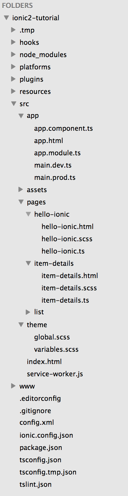

Personal is a fully functional high performance app perfect for apps who need maps and/or for tourism. This starter is built with Angular 2, Ionic 2, ES2015 and SASS to take advantage of the future web standards.
Download the Ionic View app (view.ionic.io) and use the APP ID 215f0a5e.
If you take a look at the files and folders generated, it all looks pretty similar to an Ionic 1 application initially. We have a pretty typical Cordova style project structure.
If you look in the src folder though (which is where most of your development will occur), things start looking a little bit different:

Usually in an Ionic 1 application, people would have all of their Javascript files (controllers, services, etc.) in one folder, all of the templates in another folder, and all of the styling information would usually be contained in a single app.scss file.
The default structure for an Ionic 2 application organises by functionality, so you have all of the logic, templates and styling for a particular component (in the example above we have a basic page component, a list component, and an item details component) in the one spot. This plays in well with the Angular 2 methodology of having everything be standalone components that can easily be reused in other places or projects. If you wanted to reuse a particular feature, or have lots of people working on the same project, the old Ionic 1 approach can become quite troublesome.
The idea of organising code by feature is not specific to Angular 2 & Ionic 2, in fact people were using and advocating for the feature based approach in Ionic 1 applications, it’s just that most people were doing it the other way (trends are hard to break). With the way Angular 2 works though, using the feature based structure is the default and it’s pretty hard not to use that structure.
For more info read: Ionic 2 First Look Series: Your First Ionic 2 App Explained
By default Ionic 2 uses Typescript instead of Javascript, to stay up-to-date with the new way to work with Ionic see this Book.
Once again, thank you so much for purchasing this theme. As I said at the beginning, I'd be glad to help you if you have any questions relating to this theme. No guarantees, but I'll do my best to assist. If you have a more general question relating to the themes on ThemeForest, you might consider visiting the forums and asking your question in the "Item Discussion" section.
Jean Lucas de Carvalho